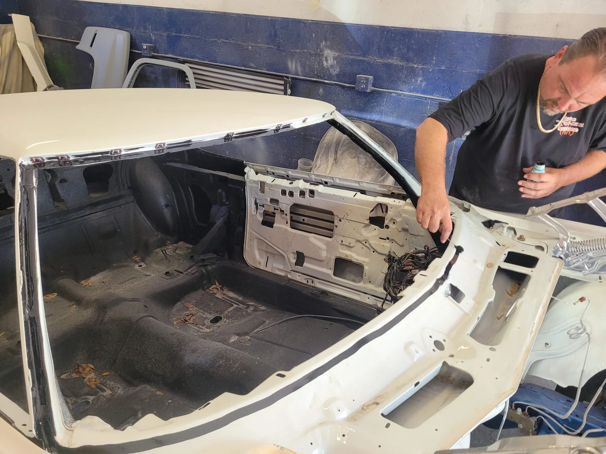

Our story
Meet Big John.
Custom vehicle work is part of the story. Mobile auto glass is what brings the team to customers today.

The custom years
A shop with a family story.
John built custom vehicles, including a trike for his son. Today, they work together at Big John’s Customs.

The work today
Mobile auto glass in Leesburg.
The business shifted toward auto glass over time. Most installations are mobile, with the Leesburg shop available when weather or the job makes an indoor space useful.
See our glass services →Tell us what glass you need